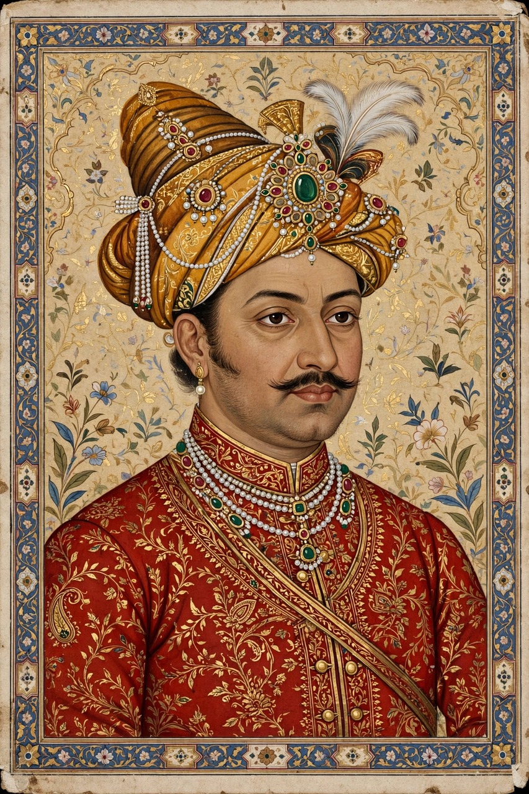

| Maharaja Sawai Jai Singh II | |
|---|---|
 | |
| Reign | 3 December 1699 – 21 September 1743 |
| Predecessor | Bishan Singh |
| Successor | Ishwari Singh |
| Born | 3 November 1688, Amber, India |
| Died | 21 September 1743 (aged 54), Jaipur |
| House | Kachwaha |
Maharaja Sawai Jai Singh II (3 November 1688 – 21 September 1743) was the ruler of the Kingdom of Amber, who later founded the fortified city of Jaipur and made it his capital. He moved the capital of the Kachhwahas from Amber (fuelled by its shortage of water) to the newly established city of Jaipur in 1727. He is also known for building observatories (Jantar Mantars) at five places in India between 1724 and 1735.
Jai Singh ascended the throne of Amber at the age of eleven on the death of his father, Maharaja Bishan Singh. He caught the attention of the Mughal emperor Aurangzeb, who awarded him the title "Sawai" (one and a quarter), meaning he was a quarter more capable than his peers. Jai Singh initially served in the Mughal army and fought in the Deccan, but as Mughal power waned he expanded his own dominions and influence in Rajputana.
In 1727 Jai Singh laid the foundations of Jaipur, a planned city designed by the Bengali architect Vidyadhar Bhattacharya on principles of Vastu Shastra and the ancient texts on architecture. The city was laid out in a grid of nine rectangular blocks, and work began with the construction of the City Palace and the markets. Jaipur became one of the most planned cities of its time in Asia.
A keen astronomer, Jai Singh built five astronomical observatories known as Jantar Mantar in Delhi, Jaipur, Ujjain, Mathura (now destroyed) and Varanasi. Finding existing instruments inadequate, he constructed large masonry instruments of his own design and compiled astronomical tables (the Zij-i Muhammad Shahi). He also obtained European astronomical works through Jesuit contacts and sent an embassy to Portugal.
Jai Singh died in 1743 and was succeeded by his son Ishwari Singh. He is remembered as an enlightened ruler, a patron of learning and the arts, and the founder of one of India's most celebrated planned cities.